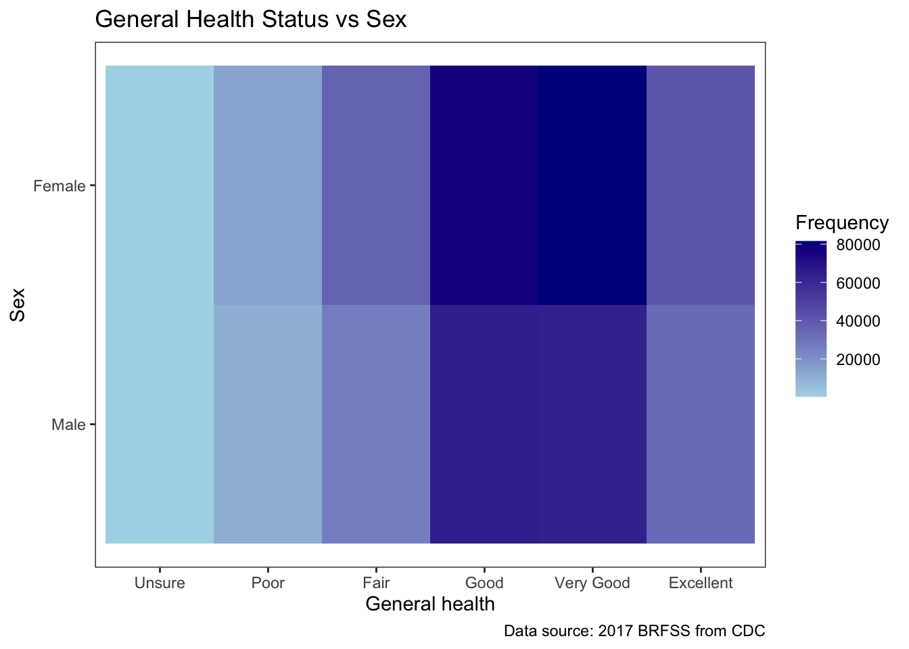
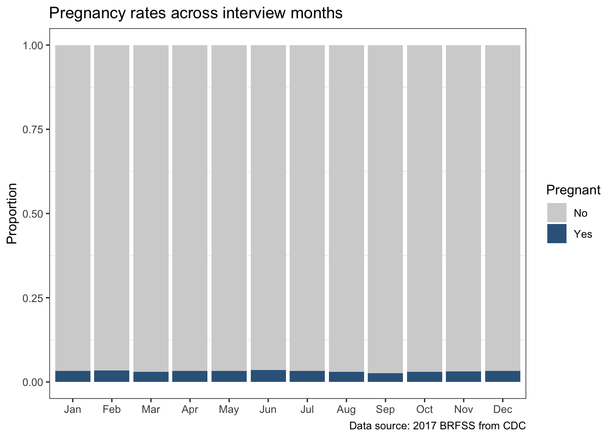
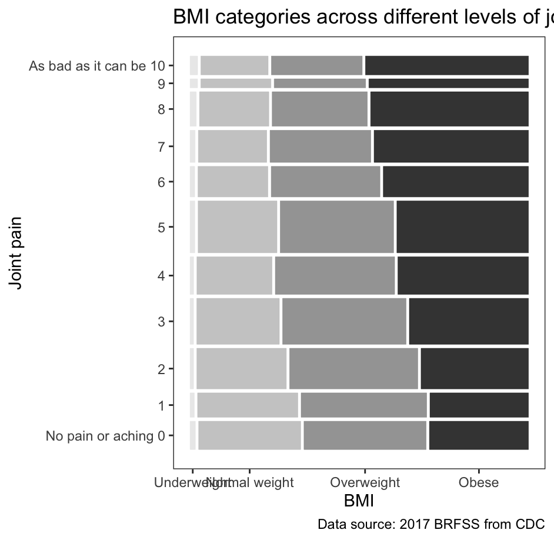
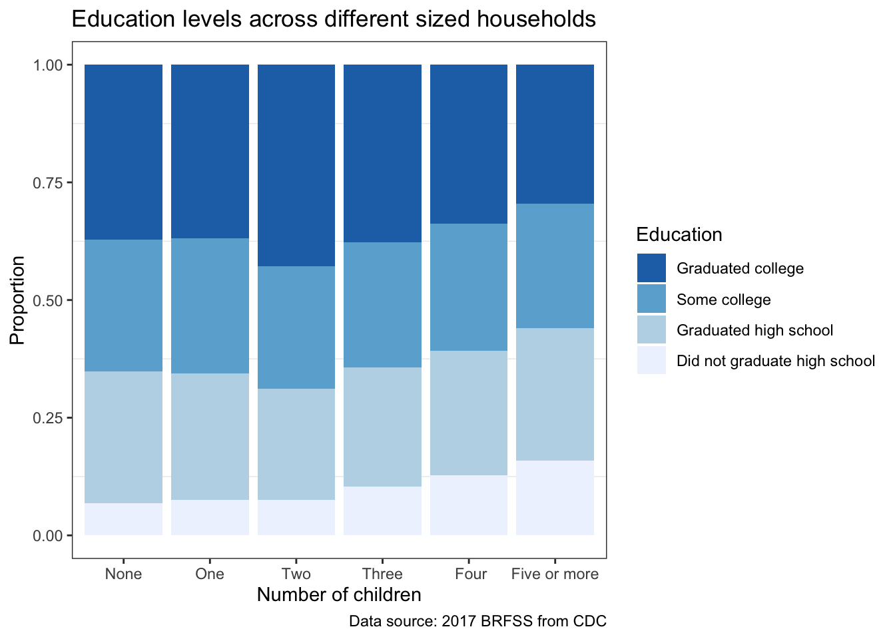
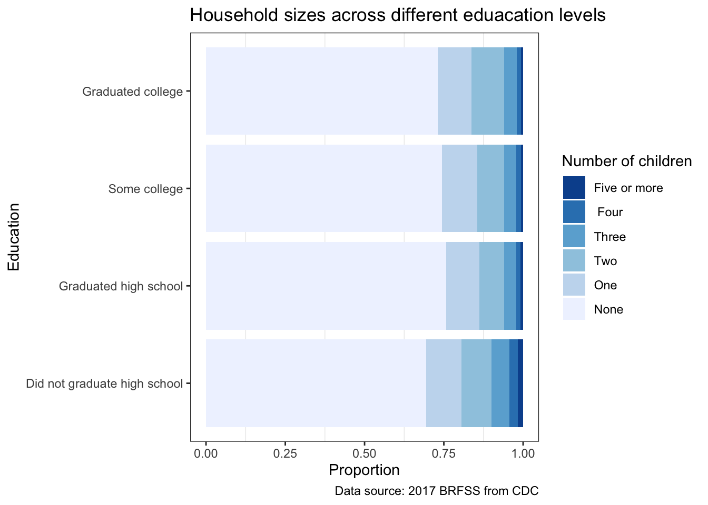
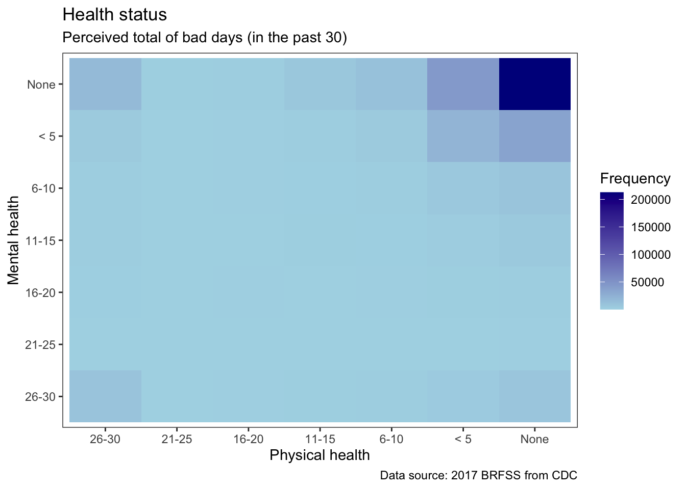

39.1 Data
For these notes, we will be continuing to use the BRFSS data to build a few different categorical variable displays. This time we will be using the data directly from the source https://www.cdc.gov/brfss/annual_data/annual_2017.html to download the data from the full 2017 survey. Please download from the link labeled “2017 BRFSS Data (SAS Transport Format)” [ZIP size 101 MB]. Extract the files and retrieve the file named “LLCP2017.XPT” (note this file is a large file, 1.29 GB).
Once the data is loaded, we will make the plots described in each of the parts parts. For each of the plots above, include a write-up should discussing the plot image and one paragraph summarizing what the plot tells us in the context of the data.
39.1.1 Read in data
The Behavioral Risk Factor Surveillance System (BRFSS) is a nationally conducted survey by the Centers for Disease Control and Prevention (CDC). Data about various health related risk factors and chronic health conditions were collected from telephone surveys. More information can be found in the https://www.cdc.gov/brfss/annual_data/2017/pdf/codebook17_llcp-v2-508.pdf.
Here is a first look at the raw data taken directly from the CDC website for the variables of interest.
# read in smaller dataset
load("extra/data/LLCP2017-selected.RData")
# preview dataset
glimpse(data_raw)Rows: 450,016
Columns: 10
$ month <chr> "01", "01", "01", "02", "01", "01", "01", "02", "01", …
$ sex <dbl> 2, 1, 1, 2, 2, 1, 1, 2, 1, 1, 2, 2, 2, 2, 2, 2, 1, 2, …
$ general_health <dbl> 2, 2, 3, 4, 4, 3, 3, 3, 3, 3, 3, 3, 3, 1, 4, 1, 2, 5, …
$ pregnant <dbl> NA, NA, NA, NA, NA, NA, NA, NA, NA, NA, NA, NA, NA, NA…
$ joint_pain <dbl> 2, NA, NA, NA, NA, NA, 2, NA, 9, NA, NA, 5, 6, 2, NA, …
$ bmi <dbl> 3, 3, 3, 3, 2, 3, 3, NA, 2, 3, 2, 4, 2, 2, 3, 2, 2, 3,…
$ n_children <dbl> 1, 1, 1, 1, 1, 1, 1, 1, 1, 2, 1, 1, 1, 1, 1, 1, 1, 1, …
$ edu <dbl> 4, 4, 1, 1, 1, 2, 3, 2, 2, 2, 2, 2, 3, 4, 2, 2, 4, 2, …
$ physical_health <dbl> 88, 88, 88, 88, 14, 6, 88, 88, 88, 2, 88, 88, 5, 88, 8…
$ mental_health <dbl> 88, 88, 88, 88, 88, 88, 88, 88, 25, 1, 88, 88, 88, 88,…39.1.2 Clean data
Looking at the codebook, we see that data values for each variable do not have meaningful labels.  These needed to be recoded to readable values before any visualizations can be created. Also note that the raw frequencies were used to calculate weighted relative frequencies, which would have been used in any formal analysis. But all of the following visualizations just used the raw, unweighted frequencies.
These needed to be recoded to readable values before any visualizations can be created. Also note that the raw frequencies were used to calculate weighted relative frequencies, which would have been used in any formal analysis. But all of the following visualizations just used the raw, unweighted frequencies.
When recoding the data, we can use factor() to map levels to meaningful labels.
In doing so, only need
xargument (implicitly this converts the variable to character).Use
levelsandlabelscombo together to map original levels to new levels given in labels. Can use this to combine levels into a single new level by just repeating the label.If use less levels than there are in the original data, data values without a corresponding level will become
NA.Note that we have to list ALL levels of the original data; so, with numeric variables where we are discretizing, would want to use
case_when().If you have ordinal variables (rather than nominal), these needed to be converted to ordered factors with
ordered().
# recode data
# -> looked at codebook for what the mapping should be
# variable specifics
# -> refused and unsure were put at the bottom of the scales
# -> for general_health, used rev() so didn't have to write the labels and levels backwards
# -> for physical_health and mental_health, case_when() converts ranges of numeric values to character values
# --> then wrap with ordered() to make it into an ordered factor
# --> can specify the order using levels argument
# --> don't need to use labels unless changing the mapping (which we aren't)
data_survey <- data_raw %>%
mutate(
month = factor(x = month,
levels = c(paste0(0, 1:9), 10:12),
labels = month.abb),
sex = factor(x = sex,
levels = c(1:3),
labels = c("Male", "Female", "Refused")),
general_health = ordered(general_health,
levels = rev(c(1:5, 7, 9)),
labels = rev(c("Excellent", "Very Good", "Good", "Fair", "Poor", "Unsure" ,"Refused"))),
pregnant = factor(x = pregnant,
levels = c(1, 2, 7, 9),
labels = c("Yes", "No", "Unsure", "Refused")),
joint_pain = ordered(x = joint_pain,
levels = c(99, 77, 0:10),
labels = c("Refused", "Unsure", "No pain or aching 0", as.character(1:9), "As bad as it can be 10")),
bmi = ordered(x = bmi,
levels = c(1:4),
labels = c("Underweight", "Normal weight", "Overweight", "Obese")),
n_children = ordered(x = n_children,
levels = c(9, 1:6),
labels = c("Unsure", "None", "One", "Two", "Three"," Four", "Five or more")),
edu = ordered(x = edu,
levels = c(9, 1:4),
labels = c("Unsure", "Did not graduate high school", "Graduated high school", "Some college", "Graduated college")),
physical_health = ordered(x = case_when(physical_health == 99 ~ "Refused",
physical_health == 77 ~ "Unsure",
physical_health == 88 ~ "None",
physical_health <= 5 ~ "< 5",
physical_health <= 10 ~ "6-10",
physical_health <= 15 ~ "11-15",
physical_health <= 20 ~ "16-20",
physical_health <= 25 ~ "21-25",
physical_health <= 30 ~ "26-30"),
levels = rev(c("None", "< 5", "6-10", "11-15", "16-20", "21-25", "26-30", "Unsure","Refused"))),
mental_health = ordered(x = case_when(mental_health == 99 ~ "Refused",
mental_health == 77 ~ "Unsure",
mental_health == 88 ~ "None",
mental_health <= 5 ~ "< 5",
mental_health <= 10 ~ "6-10",
mental_health <= 15 ~ "11-15",
mental_health <= 20 ~ "16-20",
mental_health <= 25 ~ "21-25",
mental_health <= 30 ~ "26-30"),
levels = rev(c("None", "< 5", "6-10", "11-15", "16-20", "21-25", "26-30", "Unsure","Refused")))
)
# preview dataset
glimpse(data_survey)Rows: 450,016
Columns: 10
$ month <fct> Jan, Jan, Jan, Feb, Jan, Jan, Jan, Feb, Jan, Jan, Jan,…
$ sex <fct> Female, Male, Male, Female, Female, Male, Male, Female…
$ general_health <ord> Very Good, Very Good, Good, Fair, Fair, Good, Good, Go…
$ pregnant <fct> NA, NA, NA, NA, NA, NA, NA, NA, NA, NA, NA, NA, NA, NA…
$ joint_pain <ord> 2, NA, NA, NA, NA, NA, 2, NA, 9, NA, NA, 5, 6, 2, NA, …
$ bmi <ord> Overweight, Overweight, Overweight, Overweight, Normal…
$ n_children <ord> None, None, None, None, None, None, None, None, None, …
$ edu <ord> Graduated college, Graduated college, Did not graduate…
$ physical_health <ord> None, None, None, None, 11-15, 6-10, None, None, None,…
$ mental_health <ord> None, None, None, None, None, None, None, None, 21-25,…39.2 Visualizations
39.2.1 Heat map
GOAL: Heatmap of general health (GENHLTH) vs sex (SEX)
First we needed to group and summarize the survey data for the heat map between General Health and Sex. Then we could create the heat map.
# create underlying dataset for heat map
# -> select the two variables of interest
# -> remove responses with 'refused' (still including unsure cause could have some contextual meaning)
# -> remove rows with NA
data_heat <- data_survey %>%
select(general_health, sex) %>%
filter(general_health != "Refused", sex != "Refused") %>%
na.omit
# create plotting data set for heat map
# -> get the pairwise count with group_by() and summarize()
(data_heat_plot <- data_heat %>%
group_by(general_health, sex) %>%
summarize(freq = n()))# calculate proportion of missing observations and bad responses (for the discussion of the plot)
non_included_heat <- 1 - nrow(data_heat) / nrow(data_survey)
# -> turns out to be quite small and not worth mentioning
# create heat map
# -> use geom_tile() and shade (aes = fill) by frequency to create heat map
# -> define color scale for the frequency with scale_fill_gradient()
ggplot() +
geom_tile(aes(x = general_health,
y = sex,
fill = freq),
data = data_heat_plot) +
scale_fill_gradient(low = "lightblue",
high = "darkblue",
name = "Frequency") +
labs(title = "General Health Status vs Sex",
caption = "Data source: 2017 BRFSS from CDC",
x = "General health",
y = "Sex") +
theme(panel.grid.major = element_blank())
Frequencies for Males and Females follow the same trends, however Females have higher frequencies within each general health level. We can see that lower levels of health have fewer respondents, with the highest frequency having either Good or Very Good general health.
39.2.2 Proportionally stacked Barplot
GOAL: Proportionally stacked barplot of pregnancy (PREGNANT) rates across months (IMONTH) for female responses
Female participants were asked whether or not they were pregnant. To visualize this response across interview months, we used a proportionally stacked bar plot.
# create plotting dataset for proportionally stacked bar chart
# -> filter to relevant observations / responses (do this before removing sex variable)
# -> select the two variables of interest
# -> remove rows with NA
data_bar <- data_survey %>%
filter(sex == "Female", pregnant %in% c("Yes", "No")) %>%
select(month, pregnant) %>%
na.omit
# calculate proportion of missing observations and bad responses (for the discussion of the plot)
# -> do this for only female respondents
non_included_bar <- 1 - nrow(data_bar) / nrow(filter(data_survey, sex == "Female"))
# create proportionally stacked bar chart
# -> geom_bar() with position_fill stacks bars and standardizes each stack to have constant height
# --> by the specification of variables in aes, this is calculating and displaying the conditional probabilities of P(pregnant | month)
# --> by default (alphabetically No comes before Yes??? I think that's how ggplot is ordering them, but sorting the data values has Yes first because Yes == 1 and No == 2); so reverse the order to make Yes on the bottom and therefore an easier visual comparison
# --> then make the legend order match this as well by specifying the breaks (legend starts with the top and goes down)
ggplot() +
geom_bar(aes(x = month,
fill = pregnant),
position = position_fill(reverse = TRUE),
data = data_bar) +
scale_fill_manual(breaks = c("No", "Yes"),
values = c(Yes = "steelblue4", No = "lightgrey"),
name = "Pregnant") +
labs(title = "Pregnancy rates across interview months",
caption = "Data source: 2017 BRFSS from CDC",
y = "Proportion") +
theme(panel.grid.major = element_blank(),
axis.title.x = element_blank())
The percentage of respondents that were pregnant remained relatively constant throughout all of the different interview months. 68% of female respondents were unsure, refused or did not answer this question.
39.2.3 Mosaic plot
GOAL: Mosaic plot of joint pain (JOINPAI1) within BMI categories (X_BMI5CAT)
Respondents also had their body mass index (BMI) recorded. Based on this value, they were classified into a weight category. The survey data was aggregated to create the mosaic plot below, which looked at these categories at different levels of joint pain (ranging from 0 to 10, with 10 being the worst).
# create underlying dataset for mosaic plot
# -> select the two variables of interest
# -> filter to relevant observations / responses
# -> remove rows with NA
# -> remove levels for bad responses (or else they will still have a break in the plot)
data_mosaic <- data_survey %>%
select(joint_pain, bmi) %>%
filter(joint_pain %!in% c("Unsure", "Refused")) %>%
na.omit %>%
droplevels
# create plotting data set for mosaic plot
# -> get the pairwise count with group_by() and summarize()
(data_mosaic_plot <- data_mosaic %>%
group_by(joint_pain, bmi) %>%
summarize(freq = n()))# calculate proportion of missing observations and bad responses (for the discussion of the plot)
non_included_mosaic <- 1 - nrow(data_mosaic) / nrow(data_survey)
# create mosaic plot
# -> use geom_mosaic, product() is needed in the aes for x (?? not sure exactly why)
# --> by the specification of variables in aes, this is calculating and displaying the conditional probabilities of P(bmi | joint pain)
# --> this comparison is better so that there aren't too many categories (bmi) within each outer category (joint pain)
# -> specify type of color scale by using scale_fill_grey() and set the darkness range
# -> flip coordinates because labels look better and visual comparison across categories looks better this way
ggplot() +
ggmosaic::geom_mosaic(aes(x = ggmosaic::product(joint_pain),
fill = bmi,
weight = freq),
data = data_mosaic_plot) +
scale_fill_grey(start = 0.9,
end = 0) +
labs(title = "BMI categories across different levels of joint pain",
caption = "Data source: 2017 BRFSS from CDC",
x = "Joint pain",
y = "BMI") +
theme(panel.grid.major = element_blank(),
legend.position = "none") +
coord_flip()Error:
! Discrete values supplied to continuous scale.
ℹ Example values: <environment>, <environment>, <environment>, <environment>,
and <environment>(Code not rendering, but running in console. Here is the output)

We can see that those who are obese are more likely to have higher joint pain. Additionally, the occurrences of high joint pain seems to be less frequent for those that are underweight or of normal weight. These trends follow with what intuitively we would suspect: the more weight and pressure on your joints, the more likely there are to ache. 70% of respondents were unsure, refused or did not answer the one or both of these questions.
39.2.4 Proportionally stacked barplot 2
GOAL: Any plot to show association between number of children (X_CHLDCNT) and education (X_EDUCAG)
# create plotting dataset for proportionally stacked bar chart
# -> remove bad observations ('Unsure' for number of children because the question was asked in the context of number of children in the household)
# -> select the two variables of interest
# -> remove rows with NA
data_bar_2 <- data_survey %>%
filter(n_children != "Unsure", edu != "Unsure") %>%
select(n_children, edu) %>%
na.omit
# calculate proportion of missing observations and bad responses (for the discussion of the plot)
non_included_bar_2 <- 1 - nrow(data_bar_2) / nrow(data_survey)
# -> only ~1% of very observations were removed, not worth mentioning
# create proportionally stacked bar chart
# -> geom_bar() with position_fill stacks bars and standardizes each stack to have constant height
# --> from aes(), displaying P(education | number of children)
# -> specify the color fill / scale by using scale_fill_brewer() and set the levels to go in increasing order of education
ggplot() +
geom_bar(aes(x = n_children,
fill = edu),
position = position_fill(reverse = TRUE),
data = data_bar_2) +
scale_fill_brewer(breaks = rev(levels(data_bar_2$edu)),
name = "Education") +
labs(title = "Education levels across different sized households",
caption = "Data source: 2017 BRFSS from CDC",
x = "Number of children",
y = "Proportion") +
theme(panel.grid.major = element_blank())
# create another proportionally stacked bar chart
# -> now show P(number of children | education) to see if comparisons change
ggplot() +
geom_bar(aes(x = edu,
fill = n_children),
position = position_fill(reverse = TRUE),
data = data_bar_2) +
scale_fill_brewer(breaks = rev(levels(data_bar_2$n_children)),
name = "Number of children") +
labs(title = "Household sizes across different eduacation levels",
caption = "Data source: 2017 BRFSS from CDC",
x = "Education",
y = "Proportion") +
theme(panel.grid.major = element_blank()) +
coord_flip()
We can see from the first plot that it is slightly more likely to have not graduated high school as the number of children in the household increases and that the household size of two have the the highest proportion of college graduates. From the second plot, we can see that the overwhelming majority of households have no children with decreasing proportions for larger households. This trend is fairly consistent across all levels of education.
39.2.5 Heat map 2
GOAL: Heatmap of physical health (PHYSHLTH) vs mental health (MENTHLTH)
Survey participants were asked how many of the past 30 days was their physical and mental health not good. We created a heat map to visualize this relationship.
# create underlying dataset for heat map
# -> select the two variables of interest
# -> remove responses with 'refused' (still including unsure cause could have some contextual meaning)
# -> remove rows with NA
data_heat_bonus <- data_survey %>%
select(physical_health, mental_health) %>%
filter(physical_health %!in% c("Refused", "Unsure"), mental_health %!in% c("Refused", "Unsure")) %>%
na.omit
# create plotting data set for heat map
# -> get the pairwise count with group_by() and summarize()
(data_heat_plot_bonus <- data_heat_bonus %>%
group_by(physical_health, mental_health) %>%
summarize(freq = n()))# calculate proportion of missing observations and bad responses (for the discussion of the plot)
non_included_heat_bonus <- 1 - nrow(data_heat_bonus) / nrow(data_survey)
# -> turns out to be quite small and not worth mentioning
# create heat map
# -> use geom_tile() and shade (aes = fill) by frequency to create heat map
# -> define color scale for the frequency with scale_fill_gradient()
ggplot() +
geom_tile(aes(x = physical_health,
y = mental_health,
fill = freq),
data = data_heat_plot_bonus) +
scale_fill_gradient(low = "lightblue",
high = "darkblue",
name = "Frequency") +
labs(title = "Health status",
subtitle = "Perceived total of bad days (in the past 30)",
caption = "Data source: 2017 BRFSS from CDC",
x = "Physical health",
y = "Mental health") +
theme(panel.grid.major = element_blank())
The highest frequency was for no or few bad days for both physical and mental health. All other categies seemed fairly equal with no clear trends.